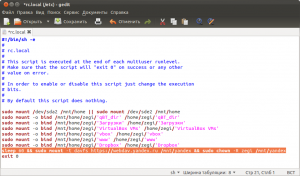
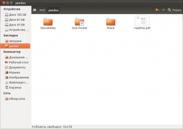

Автоматическое монтирование яндекс диска в linux
Партнерская программа «NetAngels»Получайте до 30% пожизненно от заказов ваших клиентов от «NetAngels»!Узнать большеnetangels.ruЯндекс.Директ
Про оболочное хранилище от яндекса пишут много. Сервис получился действительно неплохой. Дают 10 ГБ бесплатно, поддержка всех платформ, удобный интерфейс. Но самое приятное — это скорость. У меня сложилось впечатление, что скорость ограничена только вашим провайдером. Ещё из плюсов то, что не нужно держать локальные копии файлов, как обстоит дело с DropBox.
Однако с автоматическим подключением яндекс диска в Linux не работает «из коробки». Но это можно исправить выполнив несколько простых команд.
Если вы ещё не зарегистрированы на disk.yandex, то можно попросить инвайт здесь (долго ждать не придётся).
Как подключить сетевую папку с яндексом через nautilus я описывать не буду. После инвайта вам и так всё покажут в картинках. Сразу приступим к настройке автоматического подключение сетевой папки.
В самом начале переходим под рута (одной из команд простого sudo будет мало):
Теперь установим davfs2. Эта программа поможет примонтировать удалённую папку. Программа есть во всех стандартных репозиториях. В Ubuntu устанавливается так:
Далее нужно создать папку, туда где будут отображаться удалённые файлы.
Теперь нужно внести ваш логин и пароль от яндекс почты (оболочный диск привязывается к ней), что бы не вводить их каждый раз.
echo "https://webdav.yandex.ru username password" >> /etc/davfs2/secrets
echo "https://webdav.yandex.ru sav27951 ya22diksasha4874" >> /etc/davfs2/secrets
На заметку параноикам: этот файл изменять и читать может только рут. И ради этой команды мы переходили под рута.
Не забудьте подставить свой логин и пароль заместо username и password соответственно.
Осталось только прописать команду с монтированием в автозагрузку.
Так как папка сетевая, то монтировать её до появления сети бессмысленно. Значит нужно сделать задержку. Лично мне достаточно 60 секунд. Выше строчки с exit 0 помещаем:
sleep 60 && sudo mount -t davfs https://webdav.yandex.ru /mnt/yandex && sudo chown -R user /mnt/yandex
Заместо user пишем своё имя пользователя (оно в терминале написано до символа @). Так мы обозначим, что папка создана нами и принадлежит нам, а не руту.

Не беспокойтесь, что команда sleep заставит «уснуть» систему. Поток с rc.local идёт в независимом времени от остальных процессов. И да, я знаю про fstab. Если в комментариях напишут, что туда нужно туда прописать, так что бы оно работало, то я только за.
Перезагружать компьютер не обязательно, достаточно выполнить команду:
mount -t davfs https://webdav.yandex.ru /mnt/yandex && sudo chown -R user /mnt/yandex
чтобы появились файлы с сервера яндекса.
Закрываем терминал или просто выполняем exit (сидеть всегда под рутом — не к добру).
В конце можно добавить папку с яндексом в закладки.

Подробнее здесь.
Кроме disk.yandex существуют и другие подобные сервисы. Например box.com. Его можно подключить так же. Кстати, там дают целых 50 ГБ, правда скорость ужасная и максимальный размер одного файла 100 Мб.